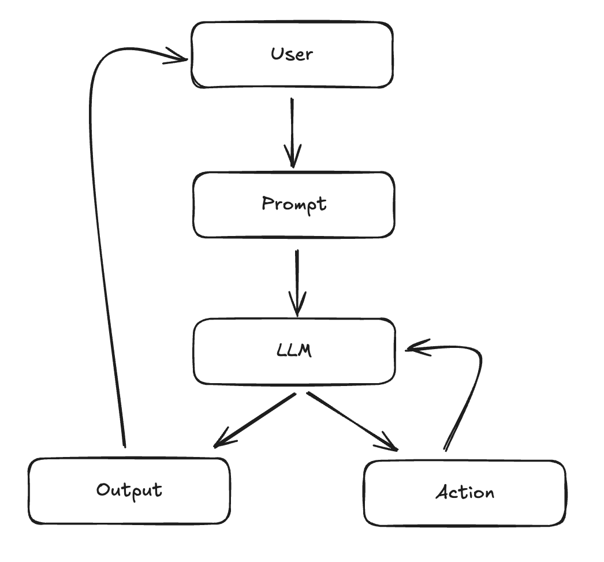
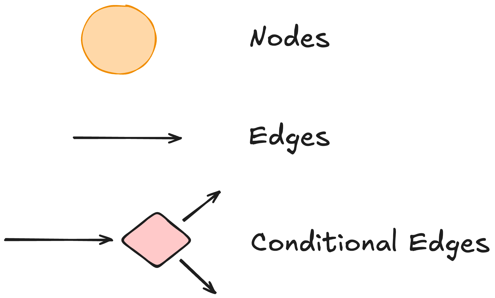

class: center, middle # Getting Started with LangChain ### Lucas Soares #### 27-02-2025 --- # Quick 'Interactivity Notes' - The presentation will be organized into the following structure: -- - __Presentation Block__ -- - __Notebook Demo__ -- - __Quick Q&A + Summary__ -- - __Optional Exercise__ During Q&A (for those that don't have questions and want to try something out) -- - Repeat --- # Large Language Models Large Language Models Predict the Next Word <img src="../notebooks/assets-resources/llm_predicts_pancakes.png" alt="LLM Predicts Pancakes" style="width: 600px;"/> --- # Applications of Large Language Models - Conversational ChatBots <img src="../notebooks/assets-resources/chatgpt-demo.png" alt="ChatGPT Demo" style="width: 600px;"/> --- # Applications of Large Language Models - Search Engines <img src="../notebooks/assets-resources/google-icon.png" alt="Google Icon" style="width: 600px;"/> --- # Applications of Large Language Models - Translation <img src="../notebooks/assets-resources/google-translate.png" alt="LLM Translation" style="width: 600px;"/> -- - And so much more from Q&A over PDFs to personalized tutoring. --- <div style="display: flex; align-items: center;"> <h1 style="margin: 0;">What is Langchain?</h1> <img src="../notebooks/assets-resources/langchain-icon.svg" alt="Langchain Icon" style="width: 100px; margin-left: 20px;"/> </div> -- - __LangChain is a framework that facilitates creation of LLM-based applications__ -- - __Main features__: -- - components -- - off-the-shelf-chains --- class: center, middle <h1> <span style="background-color: lightgreen"> Whiteboard Explain - Building Blocks of Working with LLMs </span> </h1> --- # LangChain Components -- ## Models -- - Abstractions over the LLM APIs like the ChatGPT API -- ```python from langchain_openai import ChatOpenAI chat_model = ChatOpenAI(model="gpt-3.5-turbo-0125") output = chat_model.invoke("I am teaching a live-training\ about LLMs!") print(output.content) ``` --- # LangChain Components -- ## Prompt Templates -- - Abstractions over standard prompts to LLMs -- `````` from langchain_core.prompts import ChatPromptTemplate prompt = ChatPromptTemplate.from_template( """Show me 5 examples of this concept: {concept}""" ) prompt.format(concept="animal") # Output # 'Human: Show me 5 examples of this concept: animal' ``` ??? When I say Abstraction I mean for example that you can treat pieces of text in a regular prompt like a variable you can dynamically change without modifying the rest of the prompt. --- # LangChain Components -- ## Output Parsers -- - Translates raw output from LLM to a workable format -- ```python from langchain_core.output_parsers import StrOutputParser output_parser = StrOutputParser() ``` --- # Chains in LangChain -- ## Chain = Model + Prompt + Output Parser -- - Chains are the building blocks in LangChain -- - They are used to compose abstractions that go from simple to complex components -- ```python llm = ChatOpenAI(model="gpt-3.5-turbo-0125") prompt = ChatPromptTemplate.from_template(""" Write 5 concepts that are fundamental to learn about {topic}. """) chain = prompt | llm | output_parser chain.invoke({"topic": "Artificial Neural Networks"}) ``` --- # LCEL - LangChain Expression Language ## Composing Chains with LCEL -- - LCEL is a powerful, declarative language designed to streamline the composition of complex chains in the LangChain framework. -- - Pipe syntax <img src="../notebooks/assets-resources/lcel-image.png" alt="LCEL" width="300px;"> -- ```python chain = prompt | llm | output_parser ``` -- - Allows you to build complex chain pipelines with a simple standard interface --- # LCEL - Runnables - To facilitate creation of custom chains, LangChain has implemented a __"Runnable" protocol__. -- - The standard interface includes `stream`, `invoke`, and `batch` methods. Async methods are also available -- - The input type and output type vary by component: <img src="../notebooks/assets-resources/components_input_output.png" alt="Components Input Output" style="width: 600px;"/> ??? - `stream`: Stream back chunks of the response - `invoke`: Call the chain on an input - `batch`: Call the chain on a list of inputs --- class: center, middle <h1> <span style="background-color: lightgreen"> Notebook Demo - Intro to LangChain </span> </h1> --- # Q&A & Summary - __LLMs can predict the next word in a sequence__. ("I Like eating...? ;P ") - __LangChain framework:__ eases the creation of LLM-based applications, featuring chains and the following basic components: - __Models__: Abstractions over LLM APIs (e.g ChatGPT). - __Prompt Templates__: Abstractions over prompts (makes them dynamic). - __Output Parsers__: Converts LLM outputs into usable formats (e.g string, json). - __Chains__ are the building blocks in LangChain, composed of Models, Prompt Templates, and Output Parsers. - __LCEL__ is a declarative language that users the Unix pipe symbol to build complex chain pipelines with a simple standard interface. - <span style="color: red"> __Optional Exercise During Q&A__ </span> ``` Create a simple chain for summarization of content. ``` ??? <span style="color: red">Maybe add a live chat summary?</span> --- class: center, middle # Break 5 minutes --- # Poll Question ```text Which statement best captures the primary advantage of using a framework like LangChain for LLM-based applications? A. It automatically trains your model without any configuration B. It offers unified abstractions (chains, prompts, parsers) that streamline development C. It focuses solely on deployment, not on application logic D. It restricts user inputs to enhance security ``` --- # Poll Question ```text Which best describes the purpose of a "Prompt Template" in LangChain? A. A fixed script that cannot be modified once generated B. A dynamic format that reuses prompt structures with variable placeholders C. An external file that stores long sequences of textual data D. A built-in mechanism for parsing JSON responses ``` --- # LangChain for Chat Over Documents <img src="../notebooks/assets-resources/rag-docs.png"> -- - RAG = __R__etrieval __A__ugmented __G__eneration -- - It's about connecting LLMs to documents like PDFs, Text files, HTML, etc. -- - How do we get around the context length limitations of LLMs? -- - Quick Answer is __Embeddings__! --- # LangChain for Chat Over Documents <img src="../notebooks/assets-resources/rag-docs.png"> - Embeddings are vectorized representations of text <img src="../notebooks/assets-resources/embeddings.png" alt="Embeddings" style="width: 600px;"/> --- # LangChain for Chat Over Documents <img src="../notebooks/assets-resources/embeddings-similarity.png" alt="Embeddings Similarity" style="width: 600px;"/> --- # LangChain for Chat Over Documents <img src="../notebooks/assets-resources/embeddings-similarity2.png" alt="Embeddings Similarity" style="width: 600px;"/> - Embeddings capture content and meaning --- # LangChain for Chat Over Documents <img src="../notebooks/assets-resources/vectordb.png" alt="Embeddings Similarity" style="width: 600px;"/> - Embeddings capture content and meaning - Vector DBs -- - How to build RAG systems with LangChain? --- class: center, middle <h1> <span style="background-color: lightgreen"> Whiteboard Explain - RAG Systems </span> </h1> --- # Poll Question ```text What is the primary purpose of embeddings when building LLM-powered document chat systems? A. Managing API requests and rate limits B. Turning text into numerical vectors for similarity comparison C. Automatically generating user interface elements D. Serving as a secure authentication method ``` --- # LangChain for Chat Over Documents -- <img src="../notebooks/assets-resources/rag-langchain.png" alt="RAG LangChain" style="width: 600px;"/> -- - Load -- - Split -- - Embed -- - Store --- # LangChain for Chat Over Documents <img src="../notebooks/assets-resources/rag-langchain-retrieval.png" alt="RAG LangChain" style="width: 600px;"/> -- - Retrieval Piepeline -- - Input Question -- - Retrieve Relevant Documents -- - LLM uses the prompt question + retrieved data to produce a final answer --- class: center, middle # LangChain for Chat Over Documents <h2> <span style="background-color: lightgreen"> Notebook Demo - Q&A with LangChain </span> </h2> --- # Q&A & Summary - __RAG__ = __R__etrieval __A__ugmented __G__eneration - __RAG__ is about connecting LLMs to documents like PDFs, Text files, HTML, etc. - __Embeddings__ are vectorized representations of text that capture content and meaning. - __Vector DBs__ are used to store and retrieve embeddings. - __RAG__ systems with LangChain are built using a pipeline that includes loading, splitting, embedding, and storing documents. - <span style="color: red"> __Optional Exercise During Q&A__ </span> ``` Create a simple RAG system with LangChain that can answer questions about pdfs or csvs. ``` ??? <span style="color: red">Maybe add a live chat summary?</span> --- class: center, middle # Break 5 minutes --- # Building Agents with LangChain -- ## The Agent Loop -- <img src="../notebooks/assets-resources/agent_loop.svg"> --- # Components of an Agent --- # Poll Question ```text Which best describes the “Agent Loop” illustrated in the presentation? A. A direct data-loading pipeline for vector databases B. A continuous decision-making cycle where an LLM decides actions and checks results C. A script for parallel execution of tasks in a single pass D. A framework for chunking documents into smaller sections ``` --- class: center, middle <h2> <span style="background-color: lightgreen"> Notebook Demo - Simple React Agent Walthrough in LangChain </span> </h2> --- # Q&A & Summary - __LangChain__ provides abstractions for building agents, including AgentAction, AgentFinish, and Agent. - __AgentExecutor__ is the runtime for an agent, handling agent decisions, tool calls, and observability. - __Tools__ in LangChain are functions that an agent can call, consisting of an input schema and a function to run. - __LangChain__ provides a wide set of toolkits, groups of 3-5 tools for specific objectives, an example is GitHub toolkit for interacting with GitHub. - <span style="color: red"> __Optional Exercise During Q&A__ </span> Create a simple agent that can create a schedule for you given a table of tasks and deadlines. `table format = task | date` --- # Understanding Agentic Systems - **Agentic Systems**: Systems that utilize large language models (LLMs) to manage the control flow of applications. -- - **Key Functions**: Routing decisions, tool selection, and evaluating output sufficiency. -- - **Agent Loop**: Continuous decision-making process that enables agents to solve complex tasks. <p class="footnote"> <a href='https://langchain-ai.github.io/langgraph/concepts/high_level/#deployment'> Understanding agentic systems in LangGraph. </a> </p> --- # The Agent Loop -- <img src="../notebooks/assets-resources/agent-loop.png" width="800"> <p class="footnote"> <a href='https://blog.langchain.dev/openais-bet-on-a-cognitive-architecture/'> Explanation of the agent loop in cognitive architectures. </a> </p> --- # Practical Use Case: Customer Support Agent -- - **Scenario**: An LLM-powered customer support agent. -- - **User Input**: Customer asks about order status. -- - **LLM Decision**: Determines if it can provide the status directly or if it needs to fetch data from the database. -- - **Action Taken**: If data fetch is needed, the agent queries the database and updates the user with the order status. <p class="footnote"> <a href='https://langchain-ai.github.io/langgraph/concepts/high_level/#deployment'> Practical use case of LLM agents in customer support. </a> </p> --- ## Advantages of LLM Agents -- - **Flexibility**: Agents can adapt to various tasks by determining the best action to take. -- - **Specialization**: LLM agents can be specialized with a set of tools to perform niche tasks. -- - **Multi-Agent Collaboration**: Specialized LLM agents can collaborate to perform complex tasks. <p class="footnote"> <a href='https://blog.langchain.dev/langgraph-multi-agent-workflows/'> LangGraph: Multi-Agent Workflows </a> </p> --- ## Key Components of Agentic Systems -- 1. **Tool Calling**: Utilizing external tools to perform tasks. -- 2. **Action Taking**: Executing actions based on LLM outputs. -- 3. **Memory**: Keeping track of interactions for context-aware responses. -- 4. **Planning**: Structuring steps to ensure optimal decision-making. <p class="footnote"> <a href='https://langchain-ai.github.io/langgraph/concepts/high_level/#deployment'> Key components of agentic systems. </a> </p> --- # Agents as Graphs -- - Workflows built with agents are usually structured as graphs!!  --- # Why LangGraph? LangGraph is designed for building agentic applications with some core principles: -- - **Controllability**: Offers low-level control which increases reliability in agentic systems. -- - **Human-in-the-Loop**: Built-in persistence layer enhances human-agent interaction patterns. -- - **Streaming First**: Supports streaming of events and tokens, providing real-time feedback to users. <p class="footnote"> <a href='https://langchain-ai.github.io/langgraph/concepts/high_level/#why-langgraph'> Overview of LangGraph's purpose and principles. </a> </p> --- ## The Basic Components of LangGraph LangGraph models agent workflows as graphs: --  -- - **Nodes**: Python functions that implement the logic of agents, taking the current State as input and returning an updated State. -- - **Edges/Conditional Edges**: Functions that implement fixed/conditional transitions to determine which Node to execute next based on the current State. <p class="footnote"> <a href='https://langchain-ai.github.io/langgraph/concepts/low_level/#update-state'> Explanation of LangGraph's components. </a> </p> --- ## States in LangGraph These graphs in LangGraph are driven by: -- - **States**: Shared data structures that evolve over time as Nodes execute and pass messages along Edges. -- - **Message Passing**: Nodes send messages to activate other Nodes, facilitating the execution of workflows in discrete iterations or "super-steps". <p class="footnote"> <a href='https://langchain-ai.github.io/langgraph/concepts/low_level/#update-state'> Overview of how graphs and states interact in LangGraph. </a> </p> --- class: center, middle <h1> <span style="background-color: lightgreen"> Notebook Demo: Introduction to LangGraph </span> </h1> --- # Agent Loop in LangGraph - Outline of a basic agent loop in langgraph: -- <img src="../notebooks/assets-resources/agent-loop-langgraph-version.png" width="550"> --- class: center, middle <h1> <span style="background-color: lightgreen"> Notebook Demo: A Basic Research Agent in LangGraph </span> </h1> --- # Q&A & Summary - __LangGraph__ is a framework for building agentic applications. - __Nodes__ are the core functional units in LangGraph. - __Edges__ define the routing logic in LangGraph. - __States__ are shared data structures that evolve over time as Nodes execute and pass messages along Edges. - __Agent Loop__ is the continuous decision-making process that enables agents to solve complex tasks. --- class: center, middle # Break 5 minutes --- # LangServe Super Quick Intro - LangServe helps developers deploy LangChain runnables and chains as a REST API. -- - It is integrated with FastAPI and uses pydantic for data validation. -- - It provides a client that can be used to call into runnables deployed on a server. -- - Input and Output schemas automatically inferred from your LangChain object, and enforced on every API call, with rich error messages -- - Efficient /invoke/, /batch/ and /stream/ endpoints with support for many concurrent requests on a single server -- - Playground page at /playground/ with streaming output and intermediate steps -- - Built-in (optional) tracing to LangSmith, just add your API key (see Instructions) -- - Use the client SDK to call a LangServe server as if it was a Runnable running locally (or call the HTTP API directly) --- class: center, middle <h2> <span style="background-color: lightgreen"> Notebook Demo - Deployment with LangServe </span> </h2> --- # Final Q&A & Summary - __LangServe__ helps developers deploy LangChain runnables and chains as a REST API. - It is integrated with FastAPI and uses pydantic for data validation. --- # References - [LangChain Intro Docs](https://python.langchain.com/docs/get_started/introduction) - [LangChain Documentation](https://python.langchain.com/docs/modules/agents/concepts) - [Gen Agents](https://arxiv.org/pdf/2304.03442.pdf) - [WebGPT](https://www.semanticscholar.org/paper/WebGPT%3A-Browser-assisted-question-answering-with-Nakano-Hilton/2f3efe44083af91cef562c1a3451eee2f8601d22) - [OpenAI](https://openai.com/) - [OpenAI Function Calling](https://platform.openai.com/docs/guides/function-calling) - [AutoGPT](https://github.com/Significant-Gravitas/AutoGPT) - [GPT-Engineer](https://github.com/gpt-engineer-org/gpt-engineer) - [BabyAGI](https://github.com/yoheinakajima/babyagi) - [Karpathy on Agents](https://www.youtube.com/watch?v=fqVLjtvWgq8) - [ReACT Paper](https://arxiv.org/abs/2210.03629) ---